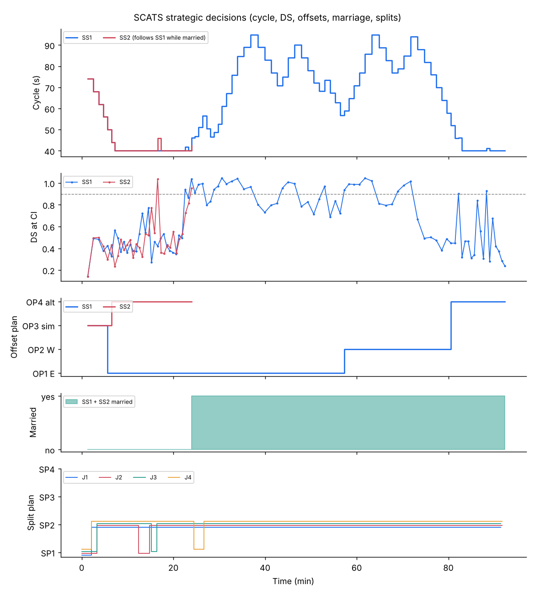
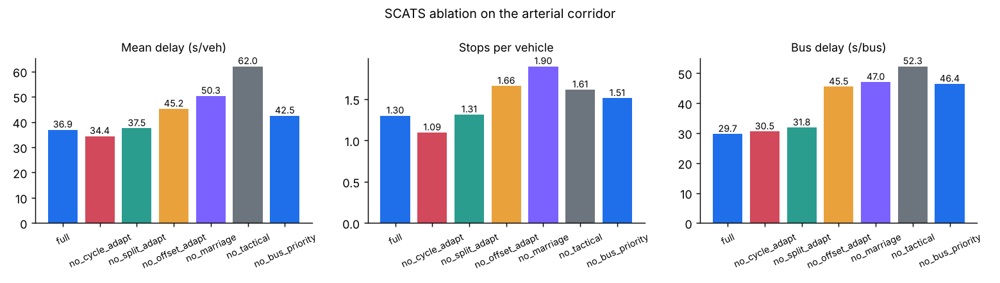

Every mechanism, working together
Strategic control turns DS into cycle lengths, split plans and offsets for groups of intersections; tactical control keeps each green honest second by second. This level takes each mechanism apart, then runs them all on a four-intersection corridor in SUMO.
Subsystems and the critical intersection
SCATS groups intersections into subsystems, typically one to ten signals that must share a cycle to be coordinated. Each subsystem has one critical intersection (CI), usually the busiest. The CI's DS sets the subsystem cycle length; the other intersections follow that cycle with their own split plans and with offsets relative to the CI.
Every cycle the regional computer runs the same loop:
- Collect DS and VK for every strategic loop of every intersection.
- Cycle length: move the subsystem cycle towards the value that would hold the CI at the target DS.
- Splits: at each intersection, vote for the split plan that best balances DS across phases.
- Offsets: vote for the offset plan that suits the directional volumes.
- Linking: decide whether neighbouring subsystems should marry or divorce.
Cycle length: bounded steps towards a target DS
If the CI ran at DS with cycle C, the cycle that would have produced the target DS is about C × DS / target. SCATS never jumps there. It moves a few seconds per cycle, a little faster when DS is above 1, always inside LMIN and LMAX. Above the stretch cycle, extra time goes to one nominated phase, normally the main road, instead of being shared by the split plan.
Cycle length controller
Set the CI's DS, then step cycles or play a rush hourSplit plans: equalise DS, then vote
For each candidate split plan, SCATS predicts what DS every phase would have had: the demand needed DS × g seconds of used green, so with a different green g_plan the DS would be DS × g / g_plan. The best plan minimises the highest predicted DS, which equalises the phases. A plan is only put into service after it wins consistently, here 2 of the last 3 cycles.
Split plan selector
Three phases: A main road, B protected turn, C side road. Cycle 90 s.| Plan | Split A/B/C | Greens (s) | Predicted DS A / B / C | Highest |
|---|
Offsets and green waves
Offsets decide which direction gets a green wave. SCATS keeps a few offset plans per subsystem link and picks one from the directional volumes (VK): the heavier direction gets progression; balanced traffic gets a simultaneous or alternating pattern. Offset changes disrupt traffic, so they need stronger agreement: 4 of the last 5 cycles in this lab.
Time-space diagram
Green bands at four intersections; lines are vehicles at the progression speedMarriage and divorce
Two adjacent subsystems can be married: they run on a common cycle, the larger of the two they each need, and share a master clock so the offset between them means something. When the traffic between them drops, coordination no longer pays for the extra cycle time, and they divorce. Separate marry and divorce thresholds (hysteresis) and a run of consecutive votes stop them flip-flopping.
Marriage logic over a day
Link VK per cycle (noisy) and the resulting stateTactical control: gap-out, skipping and the coordinated phase
The strategic layer gives each phase a planned green. The local controller then decides second by second whether that green is still useful. After the minimum green, a gap timer restarts every time a vehicle crosses the loop; if it exceeds the gap setting, the phase terminates early and its unused time passes to the next phase. Real SCATS controllers use gap, headway and waste timers together; the gap timer captures the idea.
Demand-dependent phases, such as a protected turn, are skipped when nobody is waiting. The coordinated phase (the main road) is normally held rather than gapped out, because ending it early would break the green wave; spare time from other phases returns to it.
Gap-out timer
One green, vehicles arriving at randomPublic transport priority
SCATS can receive priority requests from buses and trams. Three levels are commonly described:
- High
- A "hurry call": the transit phase is served as soon as safely possible, skipping other phases if needed. Typical for trams and emergency vehicles.
- Medium
- A flexible window: the current green is extended, or other phases are shortened so the transit phase starts early. Typical for buses.
- Low
- The vehicle waits for its phase in normal sequence.
Priority planner
A bus arrives on the main road (phase A). Cycle 80 s: A 40 s, B 30 s, intergreens 5 s.Operating modes and fallback
| Mode | What runs | When |
|---|---|---|
| Masterlink | Full adaptive: strategic plans from the regional computer, tactical control locally | Normal operation |
| Flexilink | Time-of-day plans with synchronised clocks, so offsets still hold; local actuation within them | Communications loss or planned fallback |
| Isolated | Local vehicle actuation only, no coordination | Stand-alone sites or further degradation |
| Flashing / off | No control | Faults, power loss |
Detector faults are part of daily life. SCATS raises alarms for implausible loops (for example no counts for many cycles or continuous occupancy) and the engineer configures substitutes. The Mastery level tests fault-handling strategies in SUMO.
The full system on a SUMO corridor
The Advanced SUMO lab runs every mechanism above on four 3-phase intersections, 300 m apart, in two subsystems that may marry. Demand is low, then a 25-minute eastbound peak, then a westbound peak, then low again, with buses every 4 minutes in each direction.
Lab A1: SCATS vs fixed vs actuated on the corridor
python advanced/01_corridor_scats.py # add --gui to watch
Lab A2: ablation, switch one mechanism off at a time
python advanced/02_ablation_study.py
Check your understanding
Next: Mastery, where these mechanisms become research questions.